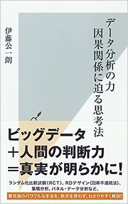
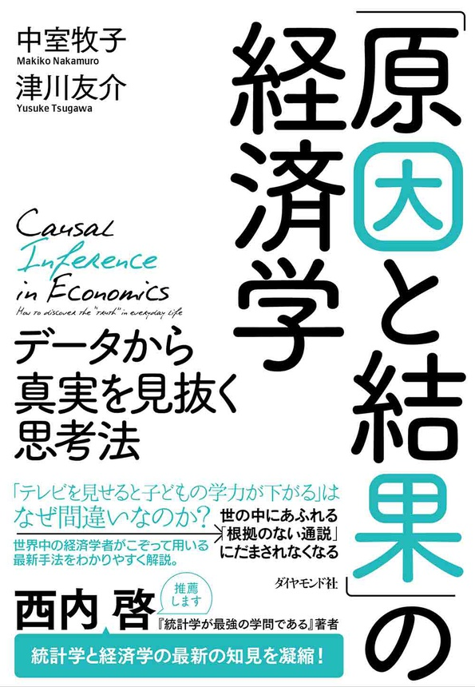
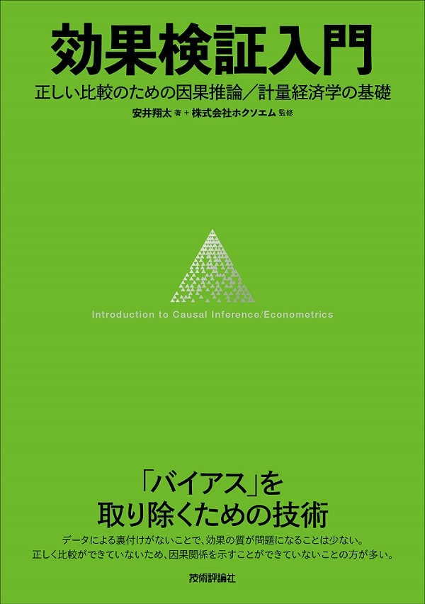
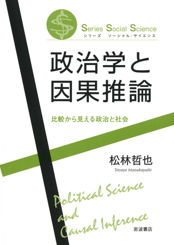
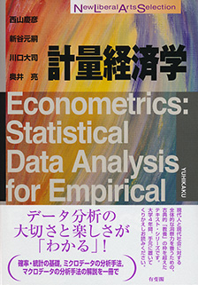
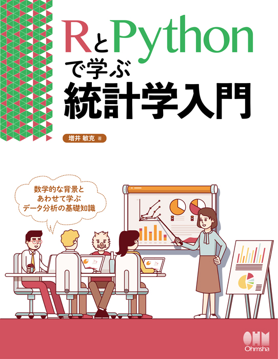
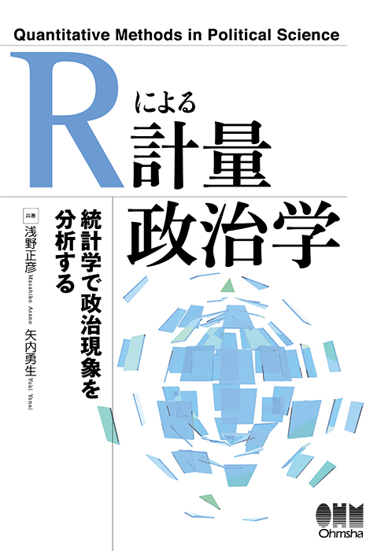

計量分析の手法
はじめに
卒論や修論の執筆に際して、「計量分析をしてみたい」と考える方は少なくありません。 プログラミングコードを書き、難しそうな表や数式を用いて主張を補強する計量分析の方法は、それだけでちょっとわくわくします。 しかし、「計量分析」といっても、様々なモデルや手法があります。 そのため、いざ計量分析を勉強しようと思っても、まず何をすればいいのかわからないという状況になることがほとんどです。 そこで本記事では、これから計量分析を学びたいと思っている人向けに、計量分析の手法としてどんなものがあるのかを整理し、どのような順番で勉強を進めればいいのかをまとめます。 特に、これから卒論や修論を執筆予定で、計量分析の方法もやってみたいという方の役に立てれば幸いです。
おすすめの書籍
まず、いくつかの書籍を紹介します。 本記事もできるだけ丁寧に書いているつもりですが、計量分析に入門するならまずは以下の書籍を読むことを強くおすすめします。 また、実際に分析をしてみたい / 手を動かしてみたいという方は、各モデルの説明で紹介されている書籍を参考にしてみてください。 これらの本を読めば、この記事を読む理由はほとんどありません。
データ分析の力 —因果関係に迫る思考法—

伊藤公一郎 (2017). 出版社のサイト
「原因と結果」の経済学 —データから真実を見抜く思考法—

中室牧子・津川友介 (2017). 出版社のサイト
効果検証入門 —正しい比較のための因果推論／計量経済学の基礎—

安井翔太(2020). 出版社のサイト
政治学と因果推論 —比較から見える政治と社会—

松林哲也(2021). 出版社のサイト
計量分析の手法
政治学 (またはより広く社会科学) で用いられる計量分析の手法は様々ありますが、最も基本的なものは回帰分析の方法です。 回帰分析とは、主に統計学の分野で発展してきた分析手法で、ある変数（従属変数）の変動を、一つまたは複数の変数（独立変数）によって説明・予測することを目的とします。 変数間の関係を定量的に記述できるこの枠組みは、原因と結果の関係を探る社会科学の問いと親和性が高く、広く用いられています。
なおここで重要なのは、相関関係と因果関係は異なるものであるという事実です。 この言葉自体は繰り返し強調されるものですが、実際にこの事実は、回帰分析を行うにあたって常に意識し続ける必要があります。 単に回帰分析をするだけでは、つまり変数間の関係を回帰式で記述するだけでは、その変数間には因果関係があるとは限りません。 たまたま2つの変数が同じように変動するのかもしれませんし、別の変数に動かされているだけかもしれないのです。 回帰分析は、変数間の相関関係のみを定量的に記述する枠組みであって、そこに因果関係があるかどうかは、回帰の結果だけから判断することはできません。
回帰分析を出発点として、政治学で主に用いられる計量分析の手法は大きく3つに分類できると考えます。
- 回帰モデルの発展
- より高度なモデルの開発。非線形回帰モデル、相互作用モデルなど。
- 因果推論のデザイン
- 回帰モデルを用いて、因果関係を分析したり効果を測定するデザイン。マッチングや回帰不連続デザインなど。
- 予測・探索的分析
- 機械学習や高度な統計モデルを用いた分析手法。テキスト分析やネットワーク分析など。
これから計量分析を勉強するという方は、まず基本的な統計学の知識 (回帰分析) を学び、その上で、自分がやりたい手法を勉強することをおすすめします。
これから計量分析を勉強するという方は、とにかく大学で授業を受けましょう！ 一橋大学なら「国際政治の計量分析I・II」とか「Qualitative Analysis in International Relations」みたいな名前の授業があります。 また、他大学でもサマースクールやセミナーのようなものもやっているので、指導教員や先輩などと相談しつつ受講してみるのがよいと思います。
以下ではまず、統計学の基礎知識の学び方を上げたうえで、(1) 基本となる回帰分析、(2) 回帰分析の発展的なモデル、(3) 因果推論のデザイン、(4) 予測・探索敵分析の順番に、基本的な考え方や参考となる書籍などを挙げます。
統計学、計量経済学の基礎
計量分析の方法論を学ぶにあたって、最初に統計学や計量経済学の基礎を学ぶことを勧めます。
計量分析計の授業を受講する際にはシラバスを確認してください。 授業によっては、数学的な知識を求めないものもあります。 というか、その場合がほとんどだと思います。 そのような授業では、授業内で基本的な知識を扱ったり、その都度説明をしてくれますので、なにも不安に思う必要はありません。
あくまで本記事は、卒論や修論で計量分析を使いたいという強い動機と、そのために授業を超えて学ぶという意思がある方向けの説明をしています。
一般的な計量経済学のテキストには、最初の方の章において統計学の基本的な説明があります。 そのため、計量経済学のテキストを使って勉強するので十分であると思います。 つまり、統計学の本は必須ではありません (もちろん、あったほうがよい)。
基本的な統計知識のうち、以下の各項目は理解しておく必要があります。
- データの種類、確率変数
- 母集団と標本
- 推測統計、信頼区間
- 統計的仮説検定、\(p\)値
- 線形単回帰分析、線形重回帰分析
ひとまず、回帰分析までを勉強しましょう。 そこまでできれば、とりあえず簡単なデータ分析までできるはずです。 また、下記にあげる書籍のうち、「R」とか「Python」とかが含まれている書籍を使えば、実際に手を動かしながら勉強を行うことができます。
計量経済学

西山慶彦・新谷元嗣・川口大司・奥井亮 (2019). 出版社のサイト
第1部 (2章〜5章) は必須であると思います。
RとPythonで学ぶ統計学入門

増井敏克 (2021). 出版社のサイト
とにかく手を動かして統計学を学びたい人向け。
Rによる計量政治学

浅野正彦・矢内勇生 (2018). 出版社のサイト